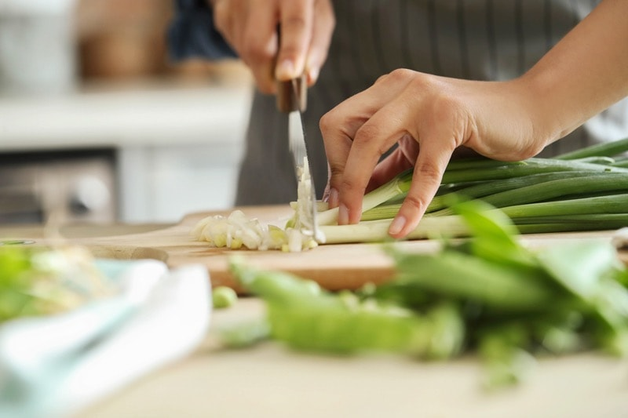
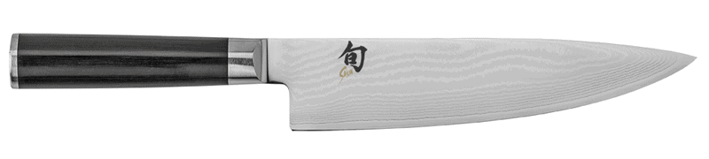
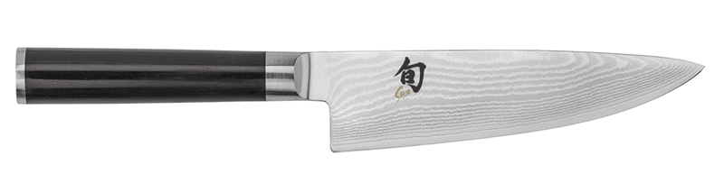
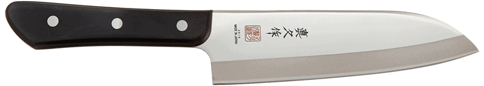
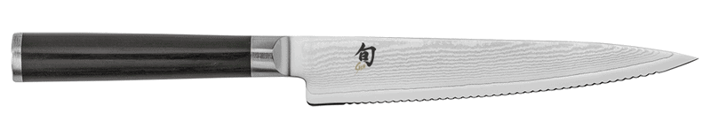
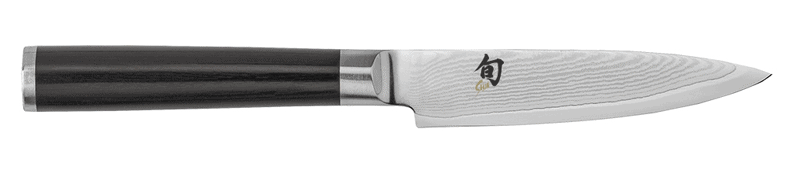

Knives that I Recommend
Knives are a valuable tool to have in the kitchen… a sharp one that is. Some of you may not be aware of this, but a dull knife can cause more harm than a sharp one. When you have to saw back and forth and use downward pressure while cutting, there’s a chance for the knife to slip and knick a finger or two.

My mother and grandmother are firm believers that they are much safer with a dull knife. I about turn inside-out watching them try to slice a bell pepper. I either force my way in and take over the task, or I leave the room. It’s just so painful to witness.
Your knife is a quality tool and should be looked after like one, use it, wash it, dry it, store it. Simple as that. Buuuut, I feel the need to go a bit more in-depth, because, hey, that’s just who I am. I am sure we can all sit around the table, sipping smoothies and share a knife story that we have personally experienced in the kitchen. Mine happened in culinary school on the first day of Knife Skills class.
It wasn’t the edge of the knife to blame; it was my technique. There is a hand positioning technique referred to as “the claw.” I was cutting a carrot into thin discs. The fingers that are holding the carrot are to be curled under and tucked back a bit, using the knuckles as a guide.
I failed to tuck one of my fingers under and back enough, and this resulted in cutting off my whole nail. Oh yea, when I do something, I do it good! There are many lessons to be learned in life… by sharing our experiences; perhaps we save just one other person from making the same bad ones.
Looking to Build a Set of Knives?
So how do you cut through all the noise about which one’s are the best? Knives are personal, and their price range is ALL over the board. If you plan on investing in a good knife or a set of knives, I highly recommend finding a local kitchen store where you can go in and hold the knives. They are sort of like shoes… they will all feel and fit different.
I have been using the Shun brand since 2007. It’s a growing investment that I have been putting together throughout this time. I own quite a few knives, but I am going to share my top picks. These are what I would refer to as essentials. I have three different sized chef’s knives selected, a Shun 6-inch and 8-inch, as well as a Mac 6.5-inch (cheaper than Shun). They are basically the same knife, just different lengths, and the Mac is a different price point. If you told me that you could only invest in one knife right now, hands down, I would say to get the Shun DM0723 Classic 6-Inch Stainless-Steel Chef’s Knife (second one listed below).
Shun DM0706 Classic 8-Inch Chef’s Knife
- Blade – This Japanese blade is made of high-quality Damascus steel. Unlike many Japanese knife blades, this one is equally beveled on both sides, so it’s great for lefties and righties alike. The blade core consists of high-carbon VG-10, Japanese super steel known for its edge retention, allowing the knives to hold their sharp edges for years.
- Handle – The handle is ergonomically shaped and weighted just right to ensure comfort and prevent slippage.
- Great for slicing, chopping, dicing, and more.
- Runs about $145.00

Shun DM0723 Classic 6-Inch Stainless-Steel Chef’s Knife
- If I could only own ONE knife, it would be this one. I can tackle any job except crack young Thai coconut with it.
- If an 8-inch knife seems a bit too much for you, this is the next size down.
- While the 6-inch length is perfect for slicing, dicing, and chopping small to medium-sized fruits, vegetables, and other foods, many cooks prefer this smaller size for its sheer nimbleness.
- The wide blade keeps knuckles off the cutting board and is extra handy when transferring cut food from board to pan.
- With its curved belly, the chef’s knife can be gently “rocked” through fresh herbs or spices to produce a very fine mince.
- Runs about $129.00

Mac Knife Superior Santoku Knife, 6-1/2-Inch
- If the Shun brand is a bit too much for your budget, I would suggest this chef’s knife, which is the knife that the culinary school used when teaching the Knife Skill class.
- The Mac cleaver knife is a sturdy double-beveled multi-purpose knife.
- The improved Tungsten alloy provides a longer-lasting edge and makes sharpening easier. High Carbon Molybdenum Vanadium alloy includes Tungsten Carbide, making it sharper, harder, and more durable.
- Runs about $75.00

Shun Classic 6-Inch Serrated Utility Knife
- In size, it’s between the chef’s knife and the paring knife, but its blade is narrower and straighter.
- The serrated edge makes it ideal for slicing foods with somewhat tough skins and soft interiors—such as avocados and tomatoes.
- Runs about $70.00

Shun DM0716 Classic 4-Inch Paring Knife
- For a paring knife, I find this size comfortable. It’s perfect for any paring task—as well as chopping small foods, such as garlic cloves or ginger, against a cutting board.
- The extra length of this knife makes it easy to peel and trim even larger fruits and vegetables, such as extra-large potatoes or apples.
- Runs about $95.00

High-quality knives can and should be enjoyed for a long time.
Build your collection over time, but most importantly, work on building your confidence in using them. A knife may always remain “a knife” to you… or it may become a passionate collection for you. Learning to prepare foods with the right tool is priceless and should be part of the joy.
When working with sharp tools in the kitchen, I recommend wearing No-Cry Cut Resistant Gloves. They are made of food-safe ultra-high molecular weight polyethylene, glass fiber, and spandex. These gloves have been designed to resist cuts from even the sharpest blades. These gloves will reduce the likelihood of sustaining serious injury if accidents happen.
They are ideal for cutting, working with mandoline slicers, knives, cutters, graters and peelers in the kitchen, woodworking, carving, carpentry, picking up broken glass, and so much more… Don’t get me wrong, these gloves don’t replace the care and respect that all sharp utensils demand, but they will help build your confidence as you up your culinary skills. There is a link posted below on the ones that I recommend.
Let’s Go Shopping!
Once you click on these links, be sure to search around a bit more when looking at specific knife organizers.
They come in all shapes, sizes, colors, and decor.
High-Quality Knives
Optional but recommended when using knives and mandolins:
- NoCry Cut Resistant Gloves (be sure to select size upon ordering) $10.94
Another reason I like Shun knives is your Shun knife comes with free lifetime sharpening. Just send the knife to their Tualatin, Oregon facility. They will sharpen it for free and return it to you. If you live in the area, you can drop by their Warranty Department, and they’ll sharpen up to two knives for you while you wait.
Nouveauraw.com is a participant in the Amazon Services LLC Associates Program, an affiliate advertising program designed to provide a means for us to earn fees by linking to Amazon.com and affiliated sites – at no extra cost to you.
Thank you for your support! amie sue
© AmieSue.com